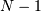

Standard array subclasses¶
The ndarray in NumPy is a “new-style” Python built-in-type. Therefore, it can be inherited from (in Python or in C) if desired. Therefore, it can form a foundation for many useful classes. Often whether to sub-class the array object or to simply use the core array component as an internal part of a new class is a difficult decision, and can be simply a matter of choice. NumPy has several tools for simplifying how your new object interacts with other array objects, and so the choice may not be significant in the end. One way to simplify the question is by asking yourself if the object you are interested in can be replaced as a single array or does it really require two or more arrays at its core.
Note that asarray always returns the base-class ndarray. If you are confident that your use of the array object can handle any subclass of an ndarray, then asanyarray can be used to allow subclasses to propagate more cleanly through your subroutine. In principal a subclass could redefine any aspect of the array and therefore, under strict guidelines, asanyarray would rarely be useful. However, most subclasses of the arrayobject will not redefine certain aspects of the array object such as the buffer interface, or the attributes of the array. One important example, however, of why your subroutine may not be able to handle an arbitrary subclass of an array is that matrices redefine the “*” operator to be matrix-multiplication, rather than element-by-element multiplication.
Special attributes and methods¶
See also
Numpy provides several hooks that subclasses of ndarray can customize:
- numpy.__array_finalize__(self)¶
This method is called whenever the system internally allocates a new array from obj, where obj is a subclass (subtype) of the ndarray. It can be used to change attributes of self after construction (so as to ensure a 2-d matrix for example), or to update meta-information from the “parent.” Subclasses inherit a default implementation of this method that does nothing.
- numpy.__array_prepare__(array, context=None)¶
At the beginning of every ufunc, this method is called on the input object with the highest array priority, or the output object if one was specified. The output array is passed in and whatever is returned is passed to the ufunc. Subclasses inherit a default implementation of this method which simply returns the output array unmodified. Subclasses may opt to use this method to transform the output array into an instance of the subclass and update metadata before returning the array to the ufunc for computation.
- numpy.__array_wrap__(array, context=None)¶
At the end of every ufunc, this method is called on the input object with the highest array priority, or the output object if one was specified. The ufunc-computed array is passed in and whatever is returned is passed to the user. Subclasses inherit a default implementation of this method, which transforms the array into a new instance of the object’s class. Subclasses may opt to use this method to transform the output array into an instance of the subclass and update metadata before returning the array to the user.
- numpy.__array_priority__¶
The value of this attribute is used to determine what type of object to return in situations where there is more than one possibility for the Python type of the returned object. Subclasses inherit a default value of 1.0 for this attribute.
Matrix objects¶
matrix objects inherit from the ndarray and therefore, they have the same attributes and methods of ndarrays. There are six important differences of matrix objects, however, that may lead to unexpected results when you use matrices but expect them to act like arrays:
Matrix objects can be created using a string notation to allow Matlab-style syntax where spaces separate columns and semicolons (‘;’) separate rows.
Matrix objects are always two-dimensional. This has far-reaching implications, in that m.ravel() is still two-dimensional (with a 1 in the first dimension) and item selection returns two-dimensional objects so that sequence behavior is fundamentally different than arrays.
Matrix objects over-ride multiplication to be matrix-multiplication. Make sure you understand this for functions that you may want to receive matrices. Especially in light of the fact that asanyarray(m) returns a matrix when m is a matrix.
Matrix objects over-ride power to be matrix raised to a power. The same warning about using power inside a function that uses asanyarray(...) to get an array object holds for this fact.
The default __array_priority__ of matrix objects is 10.0, and therefore mixed operations with ndarrays always produce matrices.
Matrices have special attributes which make calculations easier. These are
matrix.T transpose matrix.H hermitian (conjugate) transpose matrix.I inverse matrix.A base array
Warning
Matrix objects over-ride multiplication, ‘*’, and power, ‘**’, to be matrix-multiplication and matrix power, respectively. If your subroutine can accept sub-classes and you do not convert to base- class arrays, then you must use the ufuncs multiply and power to be sure that you are performing the correct operation for all inputs.
The matrix class is a Python subclass of the ndarray and can be used as a reference for how to construct your own subclass of the ndarray. Matrices can be created from other matrices, strings, and anything else that can be converted to an ndarray . The name “mat “is an alias for “matrix “in NumPy.
| matrix | Returns a matrix from an array-like object, or from a string of data. |
| asmatrix(data[, dtype]) | Interpret the input as a matrix. |
| bmat(obj[, ldict, gdict]) | Build a matrix object from a string, nested sequence, or array. |
Example 1: Matrix creation from a string
>>> a=mat('1 2 3; 4 5 3')
>>> print (a*a.T).I
[[ 0.2924 -0.1345]
[-0.1345 0.0819]]
Example 2: Matrix creation from nested sequence
>>> mat([[1,5,10],[1.0,3,4j]])
matrix([[ 1.+0.j, 5.+0.j, 10.+0.j],
[ 1.+0.j, 3.+0.j, 0.+4.j]])
Example 3: Matrix creation from an array
>>> mat(random.rand(3,3)).T
matrix([[ 0.7699, 0.7922, 0.3294],
[ 0.2792, 0.0101, 0.9219],
[ 0.3398, 0.7571, 0.8197]])
Memory-mapped file arrays¶
Memory-mapped files are useful for reading and/or modifying small segments of a large file with regular layout, without reading the entire file into memory. A simple subclass of the ndarray uses a memory-mapped file for the data buffer of the array. For small files, the over-head of reading the entire file into memory is typically not significant, however for large files using memory mapping can save considerable resources.
Memory-mapped-file arrays have one additional method (besides those they inherit from the ndarray): .flush() which must be called manually by the user to ensure that any changes to the array actually get written to disk.
Note
Memory-mapped arrays use the the Python memory-map object which (prior to Python 2.5) does not allow files to be larger than a certain size depending on the platform. This size is always < 2GB even on 64-bit systems.
| memmap | Create a memory-map to an array stored in a binary file on disk. |
| memmap.flush() | Write any changes in the array to the file on disk. |
Example:
>>> a = memmap('newfile.dat', dtype=float, mode='w+', shape=1000)
>>> a[10] = 10.0
>>> a[30] = 30.0
>>> del a
>>> b = fromfile('newfile.dat', dtype=float)
>>> print b[10], b[30]
10.0 30.0
>>> a = memmap('newfile.dat', dtype=float)
>>> print a[10], a[30]
10.0 30.0
Character arrays (numpy.char)¶
Note
The chararray class exists for backwards compatibility with Numarray, it is not recommended for new development. Starting from numpy 1.4, if one needs arrays of strings, it is recommended to use arrays of dtype object_, string_ or unicode_, and use the free functions in the numpy.char module for fast vectorized string operations.
These are enhanced arrays of either string_ type or unicode_ type. These arrays inherit from the ndarray, but specially-define the operations +, *, and % on a (broadcasting) element-by-element basis. These operations are not available on the standard ndarray of character type. In addition, the chararray has all of the standard string (and unicode) methods, executing them on an element-by-element basis. Perhaps the easiest way to create a chararray is to use self.view(chararray) where self is an ndarray of str or unicode data-type. However, a chararray can also be created using the numpy.chararray constructor, or via the numpy.char.array function:
| chararray | Provides a convenient view on arrays of string and unicode values. |
| core.defchararray.array(obj[, itemsize, ...]) | Create a chararray. |
Another difference with the standard ndarray of str data-type is that the chararray inherits the feature introduced by Numarray that white-space at the end of any element in the array will be ignored on item retrieval and comparison operations.
Record arrays (numpy.rec)¶
Numpy provides the recarray class which allows accessing the fields of a record/structured array as attributes, and a corresponding scalar data type object record.
| recarray | Construct an ndarray that allows field access using attributes. |
| record | A data-type scalar that allows field access as attribute lookup. |
Masked arrays (numpy.ma)¶
See also
Standard container class¶
For backward compatibility and as a standard “container “class, the UserArray from Numeric has been brought over to NumPy and named numpy.lib.user_array.container The container class is a Python class whose self.array attribute is an ndarray. Multiple inheritance is probably easier with numpy.lib.user_array.container than with the ndarray itself and so it is included by default. It is not documented here beyond mentioning its existence because you are encouraged to use the ndarray class directly if you can.
| numpy.lib.user_array.container(data[, ...]) |
Array Iterators¶
Iterators are a powerful concept for array processing. Essentially, iterators implement a generalized for-loop. If myiter is an iterator object, then the Python code:
for val in myiter:
...
some code involving val
...
calls val = myiter.next() repeatedly until StopIteration is
raised by the iterator. There are several ways to iterate over an
array that may be useful: default iteration, flat iteration, and
 -dimensional enumeration.
-dimensional enumeration.
Default iteration¶
The default iterator of an ndarray object is the default Python iterator of a sequence type. Thus, when the array object itself is used as an iterator. The default behavior is equivalent to:
for i in range(arr.shape[0]):
val = arr[i]
This default iterator selects a sub-array of dimension 
from the array. This can be a useful construct for defining recursive
algorithms. To loop over the entire array requires for-loops.
>>> a = arange(24).reshape(3,2,4)+10
>>> for val in a:
... print 'item:', val
item: [[10 11 12 13]
[14 15 16 17]]
item: [[18 19 20 21]
[22 23 24 25]]
item: [[26 27 28 29]
[30 31 32 33]]
Flat iteration¶
| ndarray.flat | A 1-D iterator over the array. |
As mentioned previously, the flat attribute of ndarray objects returns an iterator that will cycle over the entire array in C-style contiguous order.
>>> for i, val in enumerate(a.flat):
... if i%5 == 0: print i, val
0 10
5 15
10 20
15 25
20 30
Here, I’ve used the built-in enumerate iterator to return the iterator index as well as the value.
N-dimensional enumeration¶
| ndenumerate(arr) | Multidimensional index iterator. |
Sometimes it may be useful to get the N-dimensional index while iterating. The ndenumerate iterator can achieve this.
>>> for i, val in ndenumerate(a):
... if sum(i)%5 == 0: print i, val
(0, 0, 0) 10
(1, 1, 3) 25
(2, 0, 3) 29
(2, 1, 2) 32
Iterator for broadcasting¶
| broadcast | Produce an object that mimics broadcasting. |
The general concept of broadcasting is also available from Python
using the broadcast iterator. This object takes
objects as inputs and returns an iterator that returns tuples
providing each of the input sequence elements in the broadcasted
result.
>>> for val in broadcast([[1,0],[2,3]],[0,1]):
... print val
(1, 0)
(0, 1)
(2, 0)
(3, 1)